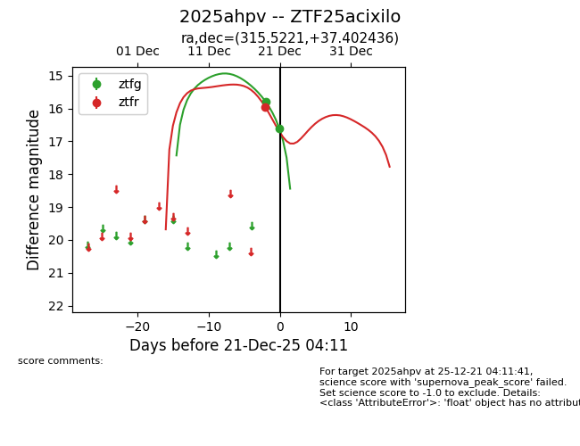
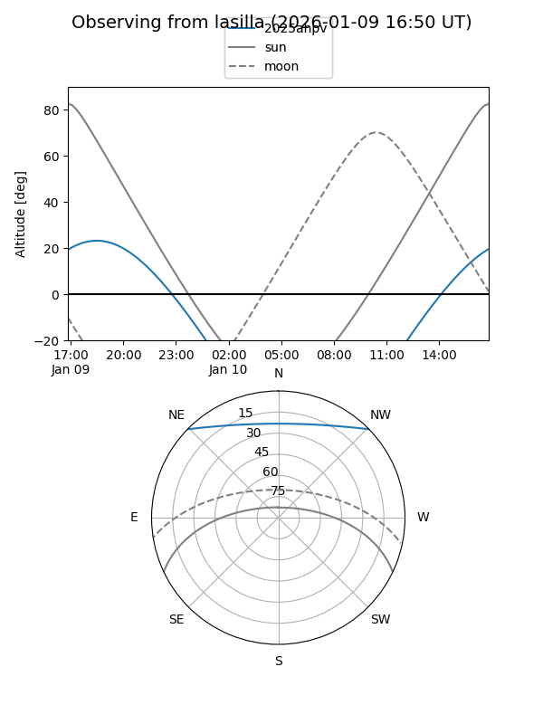
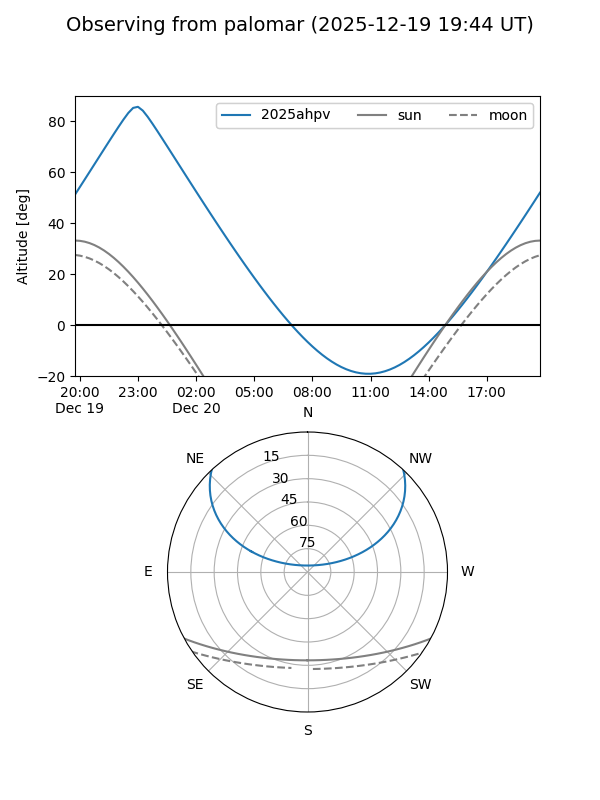
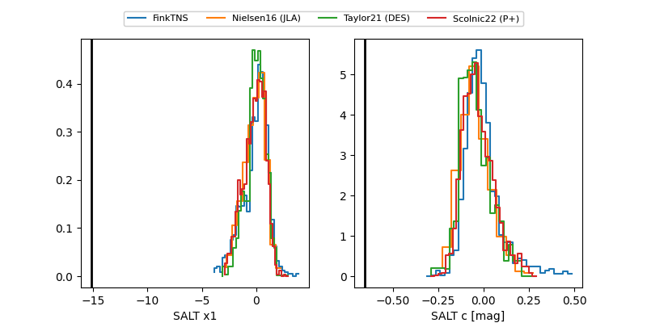

2025ahpv
Target 2025ahpv at 2025-12-31 17:00
Aliases and brokers:
FINK:
Lasair:
ALeRCE:
TNS:
YSE:
alt names
ZTF25acixilo (ztf,fink_ztf)
2025ahpv (tns,yse)
Coordinates:
equatorial (ra, dec) = 315.5221,+37.40244
equatorial (HMS+DMS) = 21:02:05.30,+37:24:08.77
galactic (l, b) = (80.6751,-6.00360)
Flags:
likely cv
Photometry:
last atlasc=16.93, atlaso=17.87, ztfg=17.07, ztfr=16.66
1 atlasc, 2 atlaso, 3 ztfg, 2 ztfr detections
Lightcurve

Visibility


Additional plots
